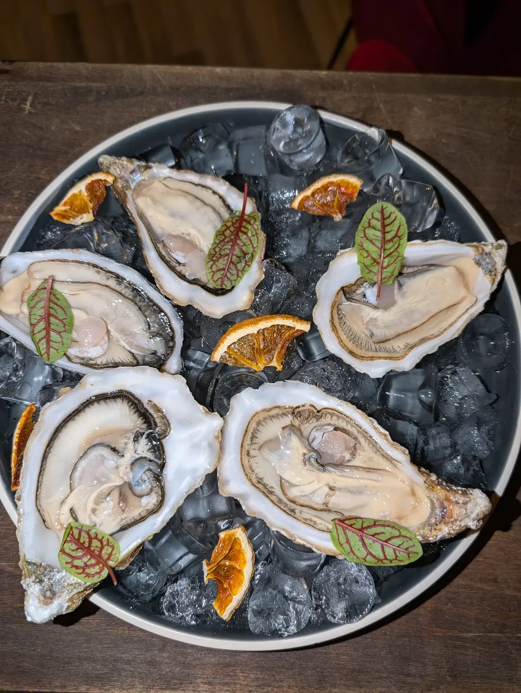
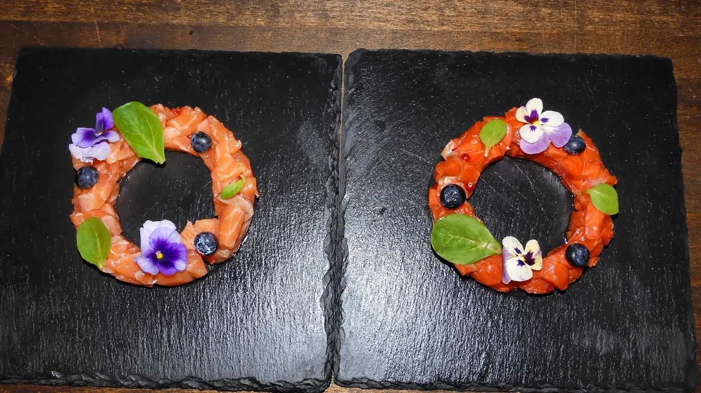
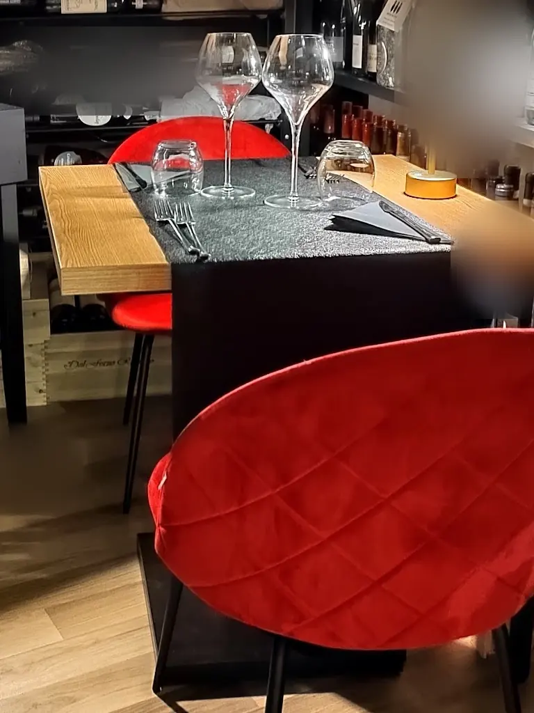

Un piatto di ostriche su ghiaccio con arancia e foglie.

Ristorante italiano a Battipaglia, in Via Enrico De Nicola, 11/13.
4,9228 recensioni GoogleVia Enrico De Nicola, 11/13, 84091 Battipaglia, SA

Un piatto di ostriche su ghiaccio con arancia e foglie.

Un tavolo apparecchiato con due calici e sedie rosse accanto alla cantina dei vini.
Due corone di salmone con mirtilli, basilico e fiori su lavagnette nere. 4,9 su 5 su Google, 228 recensioni.
4,9 su 5 · 228 recensioni su Google. Qui sotto alcune, riportate senza modifiche (i nomi sono abbreviati).
Siamo stati da Bollicine laddove è possibile cena ma noi avendo già cenato abbiamo optato per un aperitivo, 2 calici (con estetica particolare) di vino bianco accompagnati con delle bruschette e poi abbiamo deciso di assaggiare anche il Chorizo dal loro menù.
Devo dire che il locale è molto bello, si lascia guardare e arredato perfettamente, inoltre i ragazzi molto gentili e attenti al cliente, pronti a spiegare i prodotti e consigliare per un ottima esperienza. Consiglio
Giovani, preparati, competenti e gentili.
Un bel posto per aprire belle bottiglie e stuzzicare con qualcosa di ricercato.
Bella selezione di vini e champagne, il sommelier e proprietario vi saprà consigliare bene.
Vi consiglio di mangiare gli assaggini di antipasti che vi consiglia il proprietario, spettacolari.
Se cercate un posto a Battipaglia capace di lasciarvi senza parole, Bollicine è la risposta definitiva. Abbiamo vissuto un'esperienza culinaria straordinaria che ha superato di gran lunga ogni nostra aspettativa.
Il cuore del locale: il proprietario. Il ristorante è gestito da un giovane ragazzo, il titolare, che sprizza passione da tutti i pori. La sua preparazione in ambito culinario e la sua profonda conoscenza dei vini ci hanno letteralmente affascinato. Sentirlo raccontare i piatti è un viaggio nel gusto ancora prima di assaggiarli: trasmette un amore e una dedizione per il proprio lavoro che si incontrano raramente.
Ci siamo lasciati guidare in un percorso di degustazione di cibo accompagnato da vini sapientemente scelti da lui. Ogni abbinamento era un bilanciamento perfetto. Inoltre, il proprietario è stato di una disponibilità disarmante, esaudendo ogni nostra singola richiesta con il sorriso e massima professionalità.
L'ambiente è delizioso, curato e con un'atmosfera splendida, perfetta per fare da cornice a una serata speciale.
Non è stata una semplice cena, ma una vera e propria esperienza sensoriale indimenticabile. Voto: 10 e lode, veramente, per tutto! Ci torneremo sicuramente. Stra-consigliato!
⭐️⭐️⭐️⭐️⭐️ Luigi e Bollicine: eccellenza assoluta a Battipaglia
Un’esperienza gastronomica unica e indimenticabile. Al Ristorante Bollicine non ci si limita a mangiare, ma si vive un vero percorso di gusto, fatto di ricerca, passione e qualità assoluta.
Ogni piatto è una sorpresa: materie prime selezionatissime e ricercate, abbinate con genialità e raffinatezza. I sapori sono equilibrati e intensi, la presentazione elegante e curata nei dettagli.
Un plauso particolare va a Luigi, il proprietario, che con la sua passione coinvolgente racconta i piatti e le materie prime, accompagnando il cliente in questo viaggio sensoriale. La sua continua ricerca delle eccellenze più rare e particolari si riflette in ogni portata: nulla è lasciato al caso, e ogni ingrediente ha una storia da raccontare.
Il servizio è impeccabile, l’atmosfera elegante e accogliente, la carta dei vini sorprendente e ben studiata.
Bollicine non è solo un ristorante: è un luogo dove il gusto incontra l’arte, dove ci si sente accolti e guidati in un’esperienza da ricordare.
Un punto fermo a Battipaglia per chi ama la vera cucina gourmet. Complimenti Luigi, un vero fuoriclasse!
Ho prenotato in questo locale circa un mese e mezzo fa, spinta e affascinata dalle ottime recensioni lette online. Spesso le grandi aspettative rischiano di deludere, ma da Bollicine sono state del tutto esaudite e superate a pieni voti!
Un'atmosfera magica e riservata: Per l'occasione, il proprietario ci ha riservato un posticino a dir poco spettacolare: un unico tavolo per due persone situato all'interno della cantinetta del locale. Mangiare lì dentro, letteralmente circondati da bottiglie di vino selezionate, ha reso l'atmosfera intima, suggestiva e indimenticabile.
Passione pura nel piatto (e nel calice): Il titolare è un giovanissimo ragazzo che dimostra un amore incommensurabile per il suo lavoro. Questa passione si riflette chiaramente in ogni piatto che propone e negli impeccabili abbinamenti di vino che seleziona. Non è solo cibo, è un racconto.
È stata un’esperienza sensoriale a 360 gradi, dal contesto esclusivo alla qualità del percorso enogastronomico. Suggerisco a chiunque di fare tappa a Battipaglia anche solo per cenare in questo splendido locale. Voto altissimo e meritatissimo!
| Lunedì | 19:00–24:00 |
|---|---|
| Martedì | 19:00–24:00 |
| Mercoledì | Chiuso |
| Giovedì | 19:00–24:00 |
| Venerdì | 19:00–24:00 |
| Sabato | 19:00–24:00 |
| Domenica | 11:00–16:00 |
Bollicine
Via Enrico De Nicola, 11/13, 84091 Battipaglia, SA
334 131 2931
Orari della scheda Google: nei festivi possono cambiare, chiamateci per conferma.
Via Enrico De Nicola, 11/13, 84091 Battipaglia, SA
Un messaggio su WhatsApp, o una telefonata: vi risponde Bollicine.